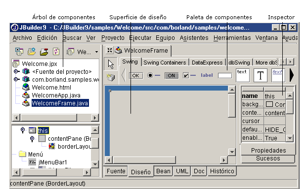
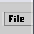

Para diseñar una ventana, haga doble clic, en el panel del proyecto, en un archivo que admita diseño, como por ejemplo WelcomeFrame.java. A continuación haga clic en la pestaña Diseño de la parte inferior del Visualizador de aplicaciones. Para añadir un componente a la aplicación, pulse sobre un componente de la paleta de componentes, suéltelo bajo su directorio superior en el árbol de componentes o en el lugar en el que desea que aparezca el componente en la superficie de diseño. Asigne valores a las propiedades de componentes y a sucesos modificándolos en el Inspector.

Si desea añadir un menú a la aplicación, pulse la pestaña Diseño y seleccione un componente JMenuBar  o JPopupMenu de la ficha Contenedores Swing de la paleta de componentes. Coloque el componente en el árbol de componentes. A continuación, en el árbol, haga doble clic en el componente menú para iniciar el diseñador de menús, que permite modificar los menús y sus opciones.
Si desea más información, consulte:
Diseño de aplicaciones con JBuilder: Requisitos para poder diseñar visualmente una clase
Diseño de aplicaciones con JBuilder: Creación de interfaces de usuario
Diseño de aplicaciones con JBuilder: Diseño de menús